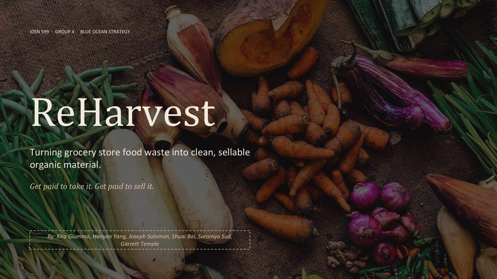
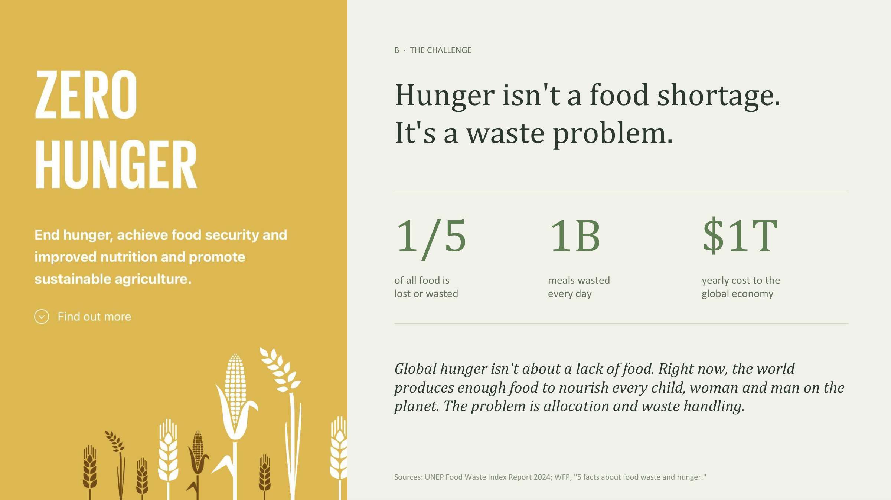
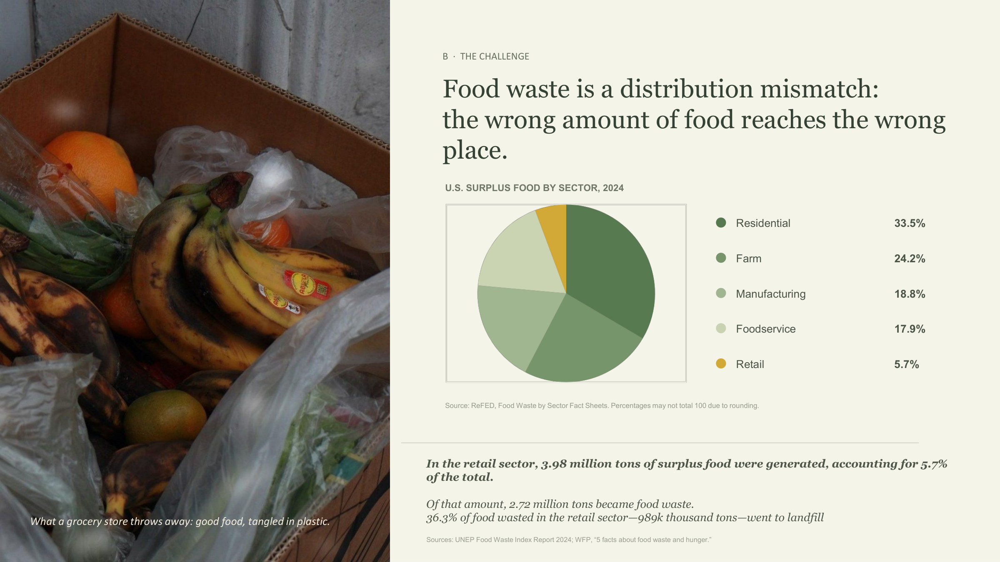
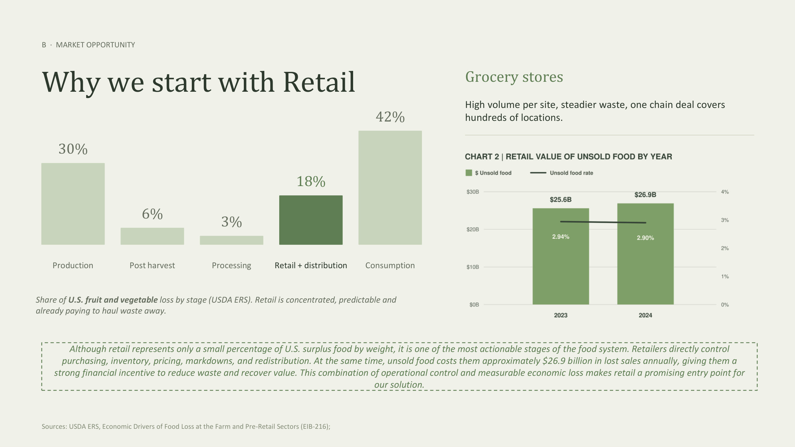
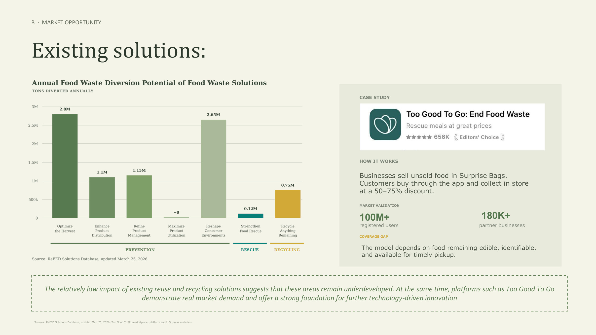
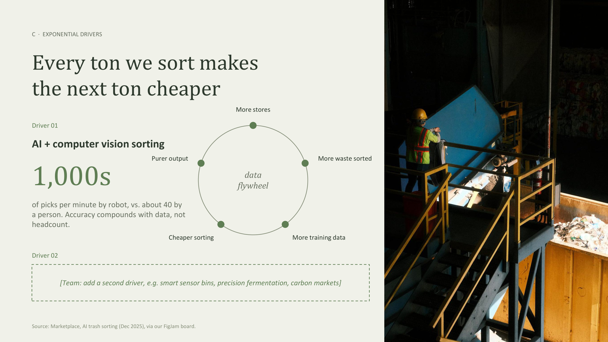
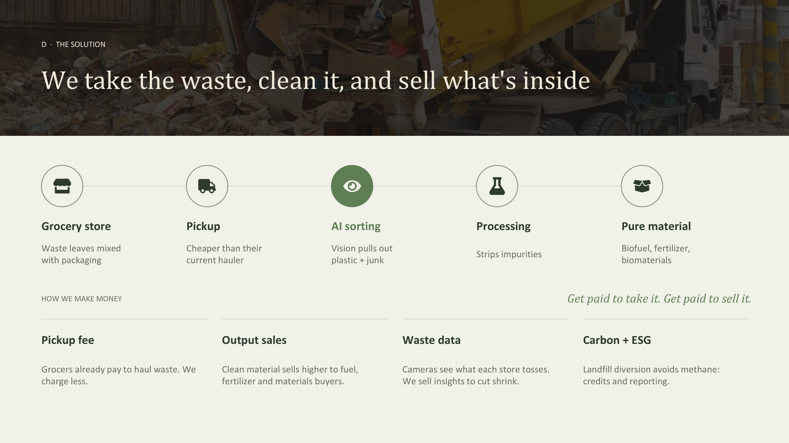
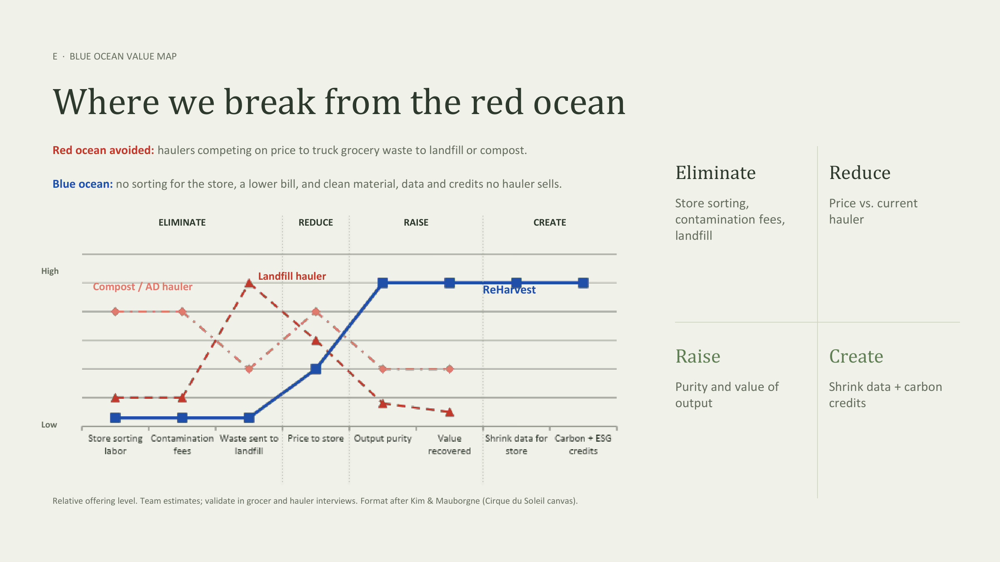

IDSN 599 · Group 4 · Blue Ocean Strategy
ReHarvest
A long-scroll walkthrough of our Blue Ocean Strategy presentation — turning grocery store food waste into clean, sellable organic material.

01 — The Challenge
Before we talk solutions, we start with the scale of the problem: how much food the world loses, and why that's a handling failure rather than a shortage.

01 — The Challenge
Breaking the problem down by sector shows exactly where the surplus food is coming from, and what happens to it once it's thrown away.

02 — Market Opportunity
Retail is a small slice of the waste problem by weight, but it's the most operationally controllable one — which is why we chose to enter here.

02 — Market Opportunity
A look at the market validation behind existing reuse models, and the coverage gap they leave open for a sorting-first approach.

03 — Exponential Drivers
The economics get better with scale: every ton sorted makes the next ton cheaper, driven by AI sorting and a compounding data flywheel.

04 — The Solution
Here's the full loop: pickup, AI sorting, processing, and the four ways ReHarvest turns that clean material into revenue.

05 — Blue Ocean Value Map
Mapped against landfill and compost haulers, ReHarvest eliminates, reduces, raises, and creates value in different places — the core of our Blue Ocean positioning.
